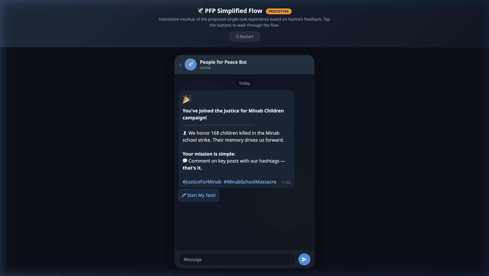
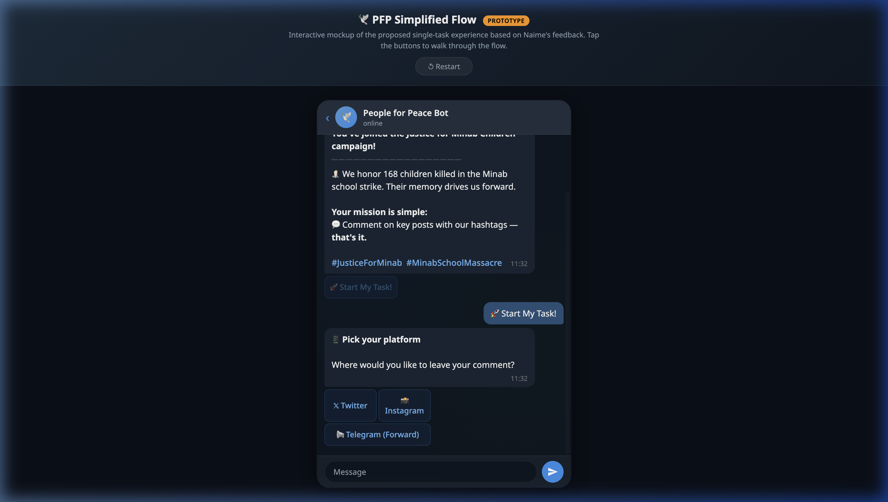
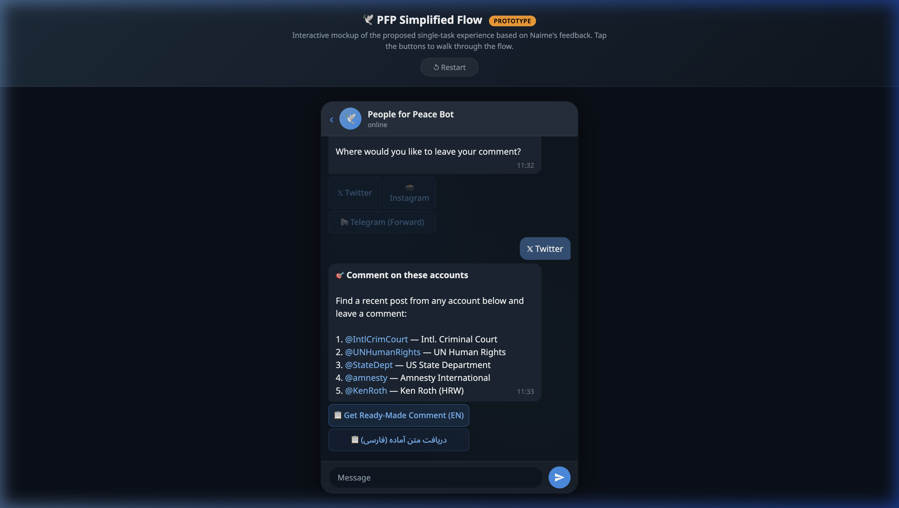
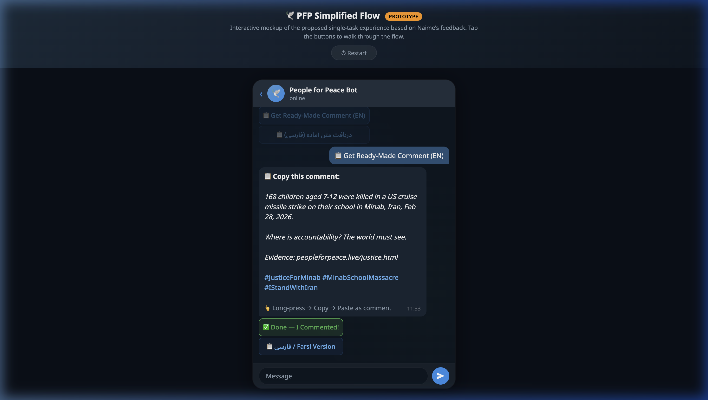
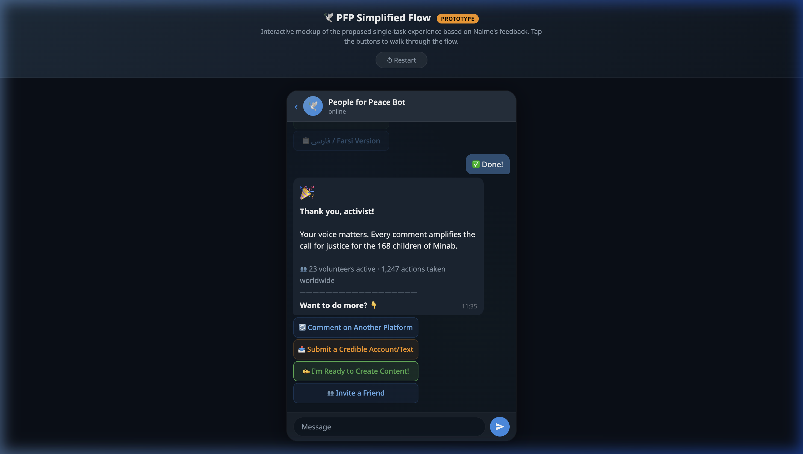
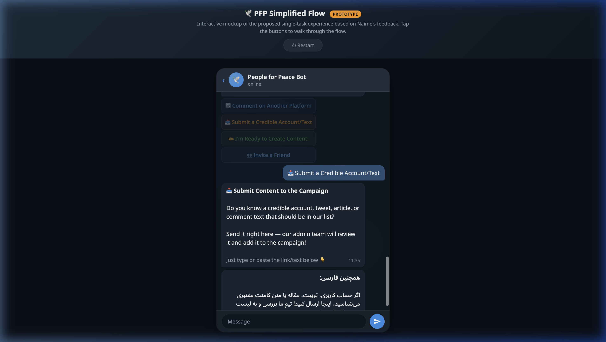

01User Flow
The simplified journey — from join to action in 3 taps:
After completing the main task, users unlock optional escalation actions: comment on another platform, submit credible accounts/texts, opt in as content creator, or invite friends.
02Screen-by-Screen
Each screen from the interactive prototype, annotated:






03Naime's Feedback → Design
How each point from the Issue #41 feedback is addressed:
| Naime's Request | Implementation | |
|---|---|---|
| Start with one simple task | Welcome screen → single "Start My Task!" CTA | ✓ |
| Comment with specific hashtags | Ready-made comments include #JusticeForMinab, #MinabSchoolMassacre | ✓ |
| Support Twitter, Instagram, Telegram | Platform picker with dedicated paths for all 3 | ✓ |
| Provide ready-made messages/comments | Copy-paste comments in EN + FA per platform | ✓ |
| Allow submitting credible accounts/texts | "Submit a Credible Account/Text" → admin review flow | ✓ |
| Opt-in for content creation | "I'm Ready to Create Content!" → Creator Circle registration | ✓ |
۰۴خلاصه برای تیم فارسیزبان
این نمونه اولیه (پروتوتایپ) بر اساس بازخورد نعیمه در ایشو شماره ۴۱ طراحی شده است.
تغییرات اصلی:
۱. بجای چکلیست چند مرحلهای، فقط یک کار ساده: کامنت گذاشتن روی پستهای هدف با هشتگهای مشخص.
۲. پشتیبانی از توییتر، اینستاگرام و تلگرام.
۳. متنهای آماده به فارسی و انگلیسی برای کپی و پیست.
۴. امکان ارسال حسابها و متنهای معتبر توسط کاربران.
۵. ثبتنام به عنوان تولیدکننده محتوا (داوطلبانه).
لطفاً نمونه اولیه تعاملی را بررسی و نظرات خود را اعلام کنید. 🙏
05All Screens
- ✓ Welcome & campaign join
- ✓ Platform picker (3 options)
- ✓ Twitter target accounts
- ✓ Ready-made comment — EN
- ✓ Ready-made comment — FA (RTL)
- ✓ Instagram target accounts
- ✓ Instagram comments (EN + FA)
- ✓ Telegram forward messages (EN + FA)
- ✓ Completion + social proof stats
- ✓ Submit content → admin review
- ✓ Content creator opt-in
- ✓ Invite a friend + referral link
🕹️ Try the Interactive Prototype
Click through the full flow yourself — tap the buttons to navigate between screens.
🚀 Open Interactive Prototype